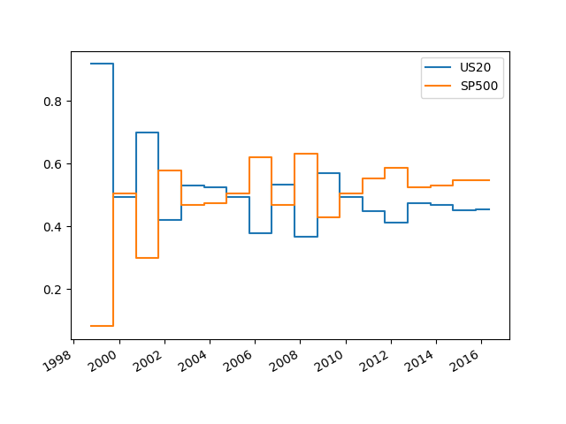

En basit formunda risk idaresi için risk eşliği yöntemi (risk parity) var; enstrümanlara portföyde risklerine (oynaklıklarına) ters oranda ağırlık vermek. [1] buna bazı ekler yapar, bir oynaklık hedefi kavramını ekler ve bu hedefe göre her alt sistemi ayarlar. Ayrıca risk eşliği oynaklığı bir kez hesaplar ve bir daha bakmaz, yeni sistem oynaklığı her gün belli gün geriye bakarak tüm enstrümanlar için tekrar tekrar hesaplar.
Hedefleme şöyle işler: Önce bir yıllık oynaklık yüzdesi hedefleriz, yüzde 20 diyelim, ve bu yüzdeden bir nakit oynaklık hedefi hesaplarız. Sermaye 100,000 lira için bu 20,000 lira, bunu gün seviyesine indiririz, 20,000 / \(\sqrt{256}\) = 1,250. Ardından her enstrümanın günlük fiyat oynaklığını buluruz, ve günlük oynaklık bölü bu sayı ile o enstrümandan kaç tane alacağımızı hesaplarız. Bu konunun detaylarını işleyeceğiz. Diğer her parametre bu hedefe göre değiştirilir. Bu yaklaşımın iyi tarafı yatırımcı kendini rahat hissettiği, ve getirisini yeterli bulduğu bir oynaklık üzerinde önceden karar verir, ve portföyünü buna göre düzenler, ve bu oynaklık bir daha (uzun süre) değişmez.
Sharpe oranı (SO) ile oynaklık hedeflemesi arasında bir ilişki var. Önce şunu belirtelim, bu yaklaşımda kazanç ile sermaye artmış ise o zaman oynaklık yüzdesi ile daha çok para yatırıma gitmelidir, kayıpta daha az. Bu da daha önce gördüğümüz Kelly yaklaşımının bir çeşidi. Şimdi, oynaklığı SO ile çarparak yıllık beklenen getiriyi hesaplamak mümkündür, çünkü SO zaten getiri bölü risk, yani bölü oynaklık idi.
Blok Degeri
Bir enstrümanın blok değeri o enstrümanın en ufak biriminde, o enstrümanın fiyatının %1 değişmesi ile ortaya çıkan fiyat farkıdır. Mesela ham petrol vadeli işlem sözleşmelerinde 1 kontraktın içinde 1000 varil vardır. Eğer yüzde 1 değişim ile fiyat $75’ten $75.75’e çıkarsa tüm değişim $.75 * 1000 = $750 demektir. Blok değeri budur.
Fakat yüzde 1’lik değişimin şansı nedir? Senetlerin ortalama fiyat oynaklığı yüzde 1 olabilir, diğer yanda Almanya 2-yıllık Schatz tahvil VİS’lerinin günlük standart sapması %0.02’dır. Petrole dönelim, diyelim ki tarihi veriye bakarak günlük ortalama değişimin yüzde 1.33 olduğunu bulduk, bu durumda günlük kar veya kaybımız ortalama 750 Dolar x 1.33 = 997.50 Dolar olacak demektir, çünkü yüzde 1’lik değişim 750 Dolar idi. Bu sonuca enstrüman kur oynaklığı (instrument currency volatility) diyelim.
Bir adım daha, eğer portföyümüz Türkiye’de TL bazlı bir hesap kullanıyorsak, kur değişimi yapmamız lazım, bu örnek için İngiliz pound olsun, USD/GBP kuru bugün 0.67, o zaman 997.50*0.67 = 668.325 Pound.
Formül yerine tek bir değer kayıtlı tutmak daha rahat olduğu için bir tek sayı değeri de hesaplanabilir, nokta değeri (point value) burada kullanılır; bir VİS’in fiyatında 1 birimlik değişimin ne kadar toptan değişimi temsil ettiği yani. Üstteki petrol örneğinde $1’lik degisim kontraktta 1000 varil olduğu için bu $1000’lik bir değişim demektir, nokta değeri olarak bu tutulur. Günlük ortalama yüzde değişimi biliyoruz zaten, 75 x 0.0133 x 1000 = 997.50 Dolar. Aynı sonuca eriştik.
Bu sayı bir enstrümanlık bloğu elde tutmanın günlük riskini gösteriyor, yani tek bir VİS. Eğer portföyde sadece bu entsruman olsaydı, ve 1,000,000 Pound yıllık oynaklık hedefimiz olsaydı, günlük hedef için \(\sqrt{256}\)’ya bölüyoruz, yani 1/16’sı 62,500 Pound olur. Bu günlük oynaklık kapasitemiz içine kaç tane petrol VİS’i sığdırabilirdik? Bunun için kapasitemizi günlük tek enstrüman petrol riskine bölüyoruz, 62,500 / 668.325 = 93.52 tane kontrakt. Dikkat bu noktaya kadar hiç yuvarlama yapmadan geldik. Bu arada dikkat edildiyse, bu risk doldurma işlemini sanki oynaklık hedefinin elverdigi tüm parayı sadece o alt sistemde harcayabilirmişiz gibi yapıyoruz. Daha sonra her alt sisteme ayrılan yüzde ile çarpınca paylaştırma tam yapılmış oluyor. Ama bu adım sonra geliyor.
Harcamalar (Costs)
Eğer herhangi bir bir enstrüman için o enstrümandan tek bir bloğu alıp hemen satsaydım, bu git/gel’in o enstrümanın yıllık riskine oranlı bedeli ne olurdu? Bu “standardize edilmiş bedel” bize her git/gel’in yıllık bazlı Sharpe oranından ne kadar kaybettireceğini bize söyler. Sharpe oranı bildiğimiz gibi getirinin yıllık oynaklığa bölünmüş halidir, getirinin oynaklığa olan oranı yani, standardize edilmiş bedel de benzer bir hesabı yapar, böylece elde ettiğimiz bedeli direk Sharpe oranından çıkartabilmemizi sağlar.
Git / gel dedik, yani bu ilk harcamanın hesabı alış fiyatı / satış fiyatı aralığıyla yapılır. Niye? Çünkü aldığımızda alış, sattığımızda satış fiyatından satıyoruz. Dikkat: geriye dönük testlerde bir fiyat kullandığımızda bu fiyat çoğunlukla AFSF iki uç noktasının tam orta noktasıdır; Fakat ya orta noktadan alım, ya da satım yapamadıysak? İşte bu “en kötü ihtimal’’ bize bir masraf olarak yansır, ki her zaman bu en kötü ihtimale göre bir harcama kalemini hesaba katmamız gerekir. O zaman ASFS yayılımını (spread) buluruz, ve ikiye böleriz, bu harcamadır.
AFSF nereden elde edilir? Borsa aracımızın sağladığı araç üzerinden enstrümanın en son AFSF’na bakarız, ve (birazdan göreceğimiz şekilde) masrafı Sharpe oranına oranlı hesaplarız, bu sebeple hacimden, oynaklıktan ileri gelen değişimlere uyarlanmış bir hesap elde etmiş oluruz.
Geçmişte, tarihi verideki her günde AFSF’nin ne olduğu çoğunlukla kaydedilen ve paylaşılan bir veri değildir, ama illa ki gerekiyorsa, onu tahmin edebilen bazı metotlar mevcut, bkz Ekler bölümü.
Neyse, araca gireriz, vadeli işlem sözleşmeleri için bir kerede kaç
tane sözleşme alınacağı AFSF için bir eşik değeri oluşturabilir, buna da
dikkat, mesela Euro Stoxx 50 için Ocak 23, 2015’te bakıyoruz, 437
sözleşme ve altındaki satımlar için 3369 fiyatı verilmiş, alımlarda 7
sözleşme ve altı alımlar için 3370 fiyatı verilmiş. Harcama demek ki
3370-3369 / 2 = 0.5 (altta slippage kolonunda). Şimdi bu
bedeli yine en son fiyata göre bir yüzdeye çeviririz, 0.5 / 3370 * 100 =
%0.01483. Ardından bu değeri bir para miktarına çeviririz, yüzde 1’lik
değişimi temsil eden değer 3370 fiyat seviyesinde 337 Eur eder (3370 *
nokta değeri * yüzde 1, yani 3370 * 10/100). 337 çarpı 0.0148 = 5
Eur.
Borsa aracı şirketi ek bazı masraflar kesebilir, bu örnekte her sözleşme için 3 Eur kesiliyor mesela.
Sharpe oranıyla alakalı bir bedel oluşturma yönünde ilerliyoruz. Çıkartma işlemini şöyle yaparız; bir sene içinde bu enstrümanı, bir tanesini, sadece bir kez ardı ardına al/sat yaptıysak bu blok masraf C = 5 + 3 = 8 Eur üzerinden 2 C eder. Diyelim Euro Stoxx enstrüman oynaklığı günlük yüzde 1.5, her yüzde 1’lik hareket 370 Eur ediyor, 370 1.5 = 506 Eur, bu günlük standart sapma. Onu yıllık standart sapma haline getirmek için 506 * 16 = 8096 Eur. 2 * 8 /8096 = 0.002 SO ünitesi. Yani bu değer artık SO’dan çıkartabileceğimiz bir sayıdır.
import pandas as pd
from StringIO import StringIO
COSTS=u"""
instrument,currency,point_value,slippage
CRUDE_W,USD,1000,0.0145328653
EDOLLAR,USD,2500,0.0025
US5,USD,1000,0.004
EUROSTX,EUR,10,0.5
V2X,EUR,100,0.0255
MXP,USD,500000,0.000011567
CORN,USD,50,0.125
"""
costs = pd.read_csv(StringIO(COSTS),index_col=0)
my_curr = 'USD'
vol_target = 0.20
capital = 250*1000
exchange = {'USD': {'EUR': 1.1, 'USD': 1.0} }
daily_vol_target = capital * vol_target / 16
def calc_cost(ins,dt = '2014-10-14'):
with zipfile.ZipFile('legacycsv.zip', 'r') as z:
dfi = pd.read_csv(z.open('%s_price.csv' % ins), index_col=0,parse_dates=True )
vol = pd.rolling_std(dfi.pct_change()*100., window=25)
res = []
price = float(dfi.ix[dt])
v = float(vol.ix[dt])
point_val = price * costs.ix[ins].point_value / 100.
block_vol = block_val*v
inst_value_vol = block_vol*exchange[my_curr][costs.ix[ins].currency]
units = daily_vol_target / inst_value_vol
exec_cost = (costs.ix[ins].slippage / price) * 100 * block_val
so_cost = (exec_cost * 2.) / (16. * block_vol)
return price,v,block_val,block_vol,inst_value_vol,units,exec_cost,so_cost
price,v,block_val,block_vol,inst_value_vol,units,exec_cost,so_cost = calc_cost('EUROSTX')
print so_cost0.001862369503import pandas as pd, zipfile
from io import StringIO
pd.options.display.float_format = '{0:.4f}'.format
instruments = ['CRUDE_W','EDOLLAR','US5','EUROSTX','V2X','MXP','CORN']
dt = '2014-10-14'
res = []
cols = ['inst','price','v','block_val','block_vol','inst_value_vol','units','exec_cost','so_cost']
for inst in instruments:
price,v,block_val,block_vol,inst_value_vol,units,exec_cost,so_cost = calc_cost(inst)
res.append([inst,price,v,block_val,block_vol,inst_value_vol,units,exec_cost,so_cost])
print pd.DataFrame(res,columns=cols) inst price v block_val block_vol inst_value_vol units \
0 CRUDE_W 85.3000 1.2678 853.0000 1081.4529 1081.4529 2.8896
1 EDOLLAR 97.0550 0.0563 2426.3750 136.7107 136.7107 22.8585
2 US5 117.0625 0.1699 1170.6250 198.9413 198.9413 15.7081
3 EUROSTX 2816.0000 1.1917 281.6000 335.5940 369.1534 8.4653
4 V2X 22.8000 2.6898 22.8000 61.3265 67.4592 46.3243
5 MXP 0.0718 0.5110 358.7500 183.3214 183.3214 17.0466
6 CORN 422.7500 1.2475 211.3750 263.6875 263.6875 11.8511
exec_cost so_cost
0 14.5329 0.0017
1 6.2500 0.0057
2 4.0000 0.0025
3 5.0000 0.0019
4 2.5500 0.0052
5 5.7835 0.0039
6 6.2500 0.0030 Devir (Turnover)
Tabii SO’dan çıkartma yapmadan önce bir enstrümanı senede yaklaşık kaç kez alıp sattığımızı bilmemiz gerekir, çünkü biraz önceki standardize edilmiş harcama tek bir al/sat’ı baz alıyor. Eğer bir enstrümanın masrafı 0.01 standardize SO ünitesi ise, ve bir senede yaklaşık 10 al/sat yapıyorsak, ve bu enstrümanı baz alan bir strateji bize SO 0.5 getiri sağlayacaksa, masrafların çıkartıldığı nihai SO 0.5 - 0.01*10 = 0.4 olacaktır. Senede yapılan yaklaşık al/sat’a devir (turnover) ismi verelim. Devir sayısını belirleyen nedir? Birkaç faktör akla gelebilir; mesela stratejimizin yaptığı enstrüman fiyat tahmini; düşeceğini tahmin ettiğimiz bir enstrümanın pozisyonunu azaltmak isteyebiliriz, bu satım yapmak demektir, ve masraf ortaya çıkar. Ya da oynaklıkta değişim olur, ve portföyümüzün oynaklık hedefini aynı seviyede tutmak için bazı pozisyonlara girmek, ya da mevcut olanlardan çıkmak gerekebilir.
[1]’in yaklaşımında hedefler tanımlanıyor, mesela oynaklık hedefi, böylece riskimizin ne olacağını daha baştan biliyoruz, ve bu risk seviyesi hiç değişmiyor. Aynı şekilde devir için bir hedef koymak, ve bu hedef üzerinden onu kısıtlamak ta mümkün. Test ettiğimiz bir stratejinin 1/3’ünden fazlasını masraflara kaybetmenin anlamı yok, bu sebeple her stratejinin SO’sunun 1/3’unu bir devir sayısı sınırını hesaplamak için kullanabiliriz. Eğer SO 0.4 ise, onun 1/3’u 0.13 eder, yani masraflar için yıllık 0.13 SO’yu hiçbir şartta geçmemeliyiz , bu demektir ki eğer masraf 0.002 SO ünitesi olan Euro Stoxx için yıllık devir muhakkak 65 altında olmalıdır.
Not: Eğer masraflar 0.13 SO’su ise ve mesela oynaklık hedefimiz yıllık yüzde 50 ise, bu getirimizin 0.13 * %50 = yüzde 6.5’si masraflara gider demektir. Bu az bir oran değil! Şahsi olarak bundan daha fazlasını tavsiye etmemiz mümkün değil.
Tahminler
Risk elimizdeki denklemin bir parçası. Diğer bir parçası bizim, ya da algoritmamızın, gelecekte bir varlığın nasıl davranacağı hakkındaki tahmini. Prensip olarak ikisel tahminlerden kaçınmalıyız, yani 0,1 türünde, evet/hayır, al/sat şeklindeki tahminler. Tahmin bir reel sayı olmalı, -20/+20 arasında mesela, ve işimizi kolaylaştırması açısından averaj bir al tahmini için +10 iyidir, açıga satışta averaj -10 değeri uygundur. O zaman +5 gibi bir tahmin nisbeten daha zayıf bir alım demek, -20 ise çok kuvvetli bir sat tahmini olacaktır.
O zaman tahminleri öncelikle oynaklık standardizasyonuna tabi tutmak lazım, ki tahmin Sharpe oranına kıyaslanabilir bir şey olsun, yani üretilen tahmini önce zaman serisinin yakın zamandaki getirilerinin standart sapmasına bölmek lazım. Ardından tahminlerin uzun süreli ortalamasının 10 olmasını istiyoruz, o zaman tahminlerimizin uzun süreli ortalamasını hesaplayıp, tüm tahminleri “10 / bu ortalama’’ ile ölçeklememiz lazım, bu sayıya tahmin çarpanı (forecast scalar) ismi verebiliriz.
Tahmin çarpanları her tahmin algoritması temel alarak hesaplanır, yani hangi veri tahmin ediliyorsa edilsin bir stratejinin belli bir çarpanı vardır. Bu hesabı bu yazının altında bulabilirsiniz. Şimdilik bu çarpanı bildiğimizi farzedelim, EWMA 32,128 için 2.84.
import pandas as pd, zipfile, util
with zipfile.ZipFile('legacycsv.zip', 'r') as z:
df = pd.read_csv(z.open('EUROSTX_price.csv'),sep=',',index_col=0,parse_dates=True)
pred = util.ewma(df.PRICE,32,128)
forecast_scalar = 2.84
pred_scaled = pred * forecast_scalarŞimdi alt sistem alım ya da satım işlemine gelirsek; üstteki petrol kontrakt alımını gelecek tahmini üzerinden nasıl ayarlarız? Eğer petrol VİS’i için averaj, 10 seviyesinde bir alım beklentimiz var ise hiçbir şey yapmamıza gerek yok, 93.52 tane kontrakt alıyoruz, bu durumda sanki 10 ile çarpıp 10 ile bölmüş oluyoruz, hiçbir etki yok. Fakat tahmin +5.0 ise o zaman 93.50 / 2 = 46.76 tane kontrakt alacağız demektir, satım için benzer durum, -20 tahmin 93.50 * 2 = 187.04 kontraktı açığa satmak demektir.
Devir hesabının tahminler ile yakın alakası var. Tahmin zaman serisinin farkının ortalamasını alıp, bu ortalamayı bir yıldaki iş günü sayısı ile çarparsak, bu tahmin serisinin sebep olacağı al/sat sayısını yaklaşık olarak hesaplamış oluruz. Eğer tahminler 10,20,10 olsaydı mesela bu bir alım, bir satım demektir, farklar 10,-10,.. bu durumu hemen gösteriyor. Üstteki tahmin serisi için [1, sf. 276],
avg = (pred_scaled / 10).diff().abs().mean()
print 'devir', avg * 256devir 8.72554168599Alt Sistemlerin Ağırlıkları
Daha önce üç tane VİS’i sadece alıp elde tutmak üzerinden ağırlık hesabı yapmıştık. Alttaki örnekte iki enstrüman üzerinde iki farklı stratejiyi işleteceğiz, elde iki tane alt sistem (subsystem) olacak, ve her sistem içinde iki tane tahmin edici bulunacak, ve biz bu her sisteme ne kadar ağırlık vereceğimizi hesaplayacağız.
Alt sistem içinde aynı enstrüman üzerinde iki strateji işletmek, iki farklı tahmin yöntemi demektir, yani aynı zaman serisine bakarak iki yöntem farklı al/sat sinyalleri üretebilirler (tabii aynı fikirde oldukları zaman bu daha iyi). [1]‘in araştırmalarına göre “strateji karıştırmanın’’ faydalı olduğu görülmüştür. Tahmin çarpanını daha önce gördük, alttaki değerler direk [1, sf. 309]’dan geliyor. Ayrıca -20/20 üzeri değerleri -20/20’ye eşitliyoruz, sistemin aşırı büyük tahminler yapmaması için. Ağırlıkların bulunması için yine bootstrap kullanıldı.
Tahminlere her sistem içinde eşit ağırlık verdik, yani 0.5 ve 0.5. İki strateji EWMAC 2,8 ve EWMAC 32,128. Her iki tahminin al/sat sinyalini bir ileri kaydırıyoruz, ve bir sonraki günün getirisi üzerinden bu sinyal ile gerçek getiriyi hesaplıyoruz.
import zipfile, pandas as pd, util, random
random.seed(0)
np.random.seed(0)
def ewmac(price,slow,fast):
vol = util.robust_vol_calc(price.diff())
fast_ewma = pd.ewma(price, span=slow)
slow_ewma = pd.ewma(price, span=fast)
raw_ewmac = fast_ewma - slow_ewma
return raw_ewmac / vol
symbols = ['SP500','US20']
df = pd.DataFrame()
with zipfile.ZipFile('legacycsv.zip', 'r') as z:
for symbol in symbols:
f = '%s_price.csv' % symbol
df[symbol] = pd.read_csv(z.open(f),sep=',',index_col=0,
parse_dates=True)['PRICE']
df = df.sort_index()
forecast = df.copy()
ewmac8_32_scalar = 10.6
ewmac32_128_scalar = 2.65
df['US20_ewmac8_32'] = ewmac(df['US20'], 8, 32) * ewmac8_32_scalar /10.
df['US20_ewmac32_128'] = ewmac(df['US20'], 32, 128) * ewmac32_128_scalar /10.
df['SP500_ewmac8_32'] = ewmac(df['SP500'], 8, 32) * ewmac8_32_scalar/10.
df['SP500_ewmac32_128'] = ewmac(df['SP500'], 32, 128) * ewmac32_128_scalar/10.
forecast['US20'] = (df['US20_ewmac8_32'] + df['US20_ewmac32_128']) / 2
forecast['SP500'] = (df['SP500_ewmac8_32'] + df['SP500_ewmac32_128']) / 2
forecast.loc[forecast.US20 > 20, 'US20'] = 20.
forecast.loc[forecast.SP500 > 20, 'SP500'] = 20.
forecast.loc[forecast.US20 < -20, 'US20'] = -20.
forecast.loc[forecast.SP500 < -20, 'SP500'] = -20.
df['US20'] = df['US20'].pct_change() * forecast.shift(1).US20 / 10.
df['SP500'] = df['SP500'].pct_change() * forecast.shift(1).SP500 / 10.
df = df[['US20','SP500']]import sys; sys.path.append('../tser_port')
import boot
weights=boot.optimise_over_periods(df,rollyears=20, monte_carlo=20,monte_length=250)
print np.array(weights.tail(1))[[ 0.34008769 0.65991231]]weights.plot()
plt.savefig('tser_voltar_01.png')
Enstruman Çeşitlendirme Çarpanı (Instrument Diversification Multiplier - IDM)
Tekrar üzerinden geçersek, risk hedeflememizi yaptık, her alt sistem içine bu hedefe göre strateji doldurduk ki her alt sistem aynı riske sahip, ardından alt sistem ağırlıklarını hesapladık ve her alt sisteme gerekli parayı ayırdık. Fakat bu noktada ortaya bir problem çıkar, çünkü ağırlık kullanımı, ve alt sistem getirilerinin arasında (elimizden geldiğince) korelasyonu az tutmuş olmamız sebebiyle nihai sistemin genel riski azaldı. Yani hedeflediğimiz riskten sapmış olduk. Elde etmek istediğimiz risk sanki her alt sistemi kendi başına işletiyormuş gibi elde edeceğimiz risk gibi olmalı. O zaman bize öyle bir çarpan lazım ki risk azalmasını telafi etsin, ve pozisyon hesabını yaparken bu çarpanı uygulayarak risk hedefine geri dönelim.
N tane alt sistemimizin olduğunu düşünelim, bu sistemlerin getirilerinin korelasyon matrisi \(H\) olsun, ve biraz önce bulduğumuz ağırlıklar \(W\) (ki ağırlıkların toplamı 1). O zaman IDM, \(1 / \sqrt{(W \cdot H \cdot W^T)}\) olacaktır. Dikkat edersek bu formül (2)’nin tam tersi.
H = df.corr()
H = H.clip(lower=0)
print 'Korelasyon'
print H
W = np.array([[0.34, 0.66]]) # ustteki sonuc
idm=1.0 / (float(np.dot(np.dot(W, H), W.transpose()))) **.5
print '\nIDM', idmKorelasyon
US20 SP500
US20 1.000000 0.096425
SP500 0.096425 1.000000
IDM 1.29697910974Tahmin Çarpanlarını Hesaplamak
Her tahmin algoritmasi için eldeki tüm veriler üzerinde tahmin üretiriz, yani her enstrüman verisi için tahmin üretip, tüm bu tahminleri birleştirip koca bir zaman serisi oluştururuz (bu tekniğe havuzlama -pooling- ismi veriliyor), ve bu serinin mutlak değerlerinin (absolute value) ortalamasını alırız.
import util, zipfile, pandas as pd
ewmacs = [(2,8),(4,16),(8,32),(16,64),(32,128),(64,256)]
for (fast,slow) in ewmacs:
with zipfile.ZipFile('legacycsv.zip', 'r') as z:
res = []
for x in z.namelist():
if '_price' in x:
df = pd.read_csv(z.open(x), index_col=0,parse_dates=True )
tmp = util.ewma(df.PRICE, fast, slow)
res.append(tmp)
tmp = pd.DataFrame(pd.concat(res))
tmp.columns = ['forecast']
target_abs_forecast = 10.
tmp=tmp.abs().iloc[:,0]
avg_abs_value=tmp.mean()
print 'ewma', slow,fast,'=', target_abs_forecast/avg_abs_valueewma 2 8 = 12.8587606411
ewma 4 16 = 8.91499507015
ewma 8 32 = 6.09843054736
ewma 16 64 = 4.17115322451
ewma 32 128 = 2.84127283125
ewma 64 256 = 1.92365849221Taşıma kuralı (carry) için (not: TK verisini ayrı kontratlardan nasıl yaratabileceğimizi Vadeli İşlem Sözleşmeleri bölümünde görmüştük, bu yazıda basitlik amacı ile [1] için yaratılmış hazır veriyi kullanıyoruz),
import util, zipfile
import pandas as pd
with zipfile.ZipFile('legacycsv.zip', 'r') as z:
res = []
for x in z.namelist():
if '_carrydata' in x:
df = pd.read_csv(z.open(x), index_col=0,parse_dates=True )
f = x.replace("__carrydata","_price")
dfc = pd.read_csv(z.open(f),index_col=0,parse_dates=True )
vol = util.robust_vol_calc(dfc.PRICE.diff())
carryoffset = np.abs(float((df.PRICE_CONTRACT - df.CARRY_CONTRACT).tail(1)))
forecast = util.carry(df.CARRY-df.PRICE, vol,np.abs(carryoffset)/12)
res.append(forecast)
tmp = pd.DataFrame(pd.concat(res))
tmp = tmp.dropna()
tmp.columns = ['forecast']
tmp=tmp.abs().iloc[:,0]
avg_abs_value=tmp.mean()
print 10./avg_abs_value 21.44Bu değerler [1, sf. 309] ile uyumlu.
Strateji Ağırlıklarını Hesaplamak (Forecast Weight Estimation)
[1]’in yaklaşımlarından bir diğeri seçilen stratejilerin hangi ağırlıklarla her alt sistem üzerinde kullanılacağını bulmak. Daha önce alt sistem içinde stratejilere eşit ağırlık vermiştik. Gerçek dünyada bu ağırlıkların optimal olması iyi olur. Her alt sistemde aynı strateji demeti olur, bu demetlere belli ağırlıklar verilir, ve her alt sistem, aynı demeti bu ağırlıklar üzerinden kullanır. Mesela petrol VİS’i üzerinde EWMAC 2,8, EWMAC 16,64 ve taşıma kuralı (carry trade, TK) kullanıyor olabiliriz, bunların ağırlığı 0.2, 0.3, 0.5 olabilir. Diğer bir alt sistem, mesela kahve, Eurodollar aynı ağırlıkları aynı şekilde kullanır.
Ağırlıkları bulmadan önce, hangi strateji demetiyle başlamak lazım? Bir liste çıkartmak çok zor değil, [1, sf. 309]’a göre EWMAC’ın yavaş ve hızlı parametreleri arasında 1’e 4 oranı mantıklı, yani EW 1,4, EW 2,8, EW 4,16, EW 8,32, diye devam edebiliriz. Bu listeden eleme yapmak için onların masraflarını kullanmak iyi oluyor, çok masraflı olan stratejileri direk eleriz. Bu konuya sonra döneceğiz.
Şimdilik nihai demeti kararlaştırmış olduğumuzu düşünelim, mesela CORN, EDOLLAR, EUROSTX, MXP, US10, V2X üzerinde EW 16,64, EW 32,128, EW 64,256 ve TK stratejilerini kullanacağız. Ağırlıkları hesaplamak için alt sistemler arası kullandığımız hesaba benzer yaklaşımı kullanacağız, boostrap tekniğini devreye sokacağız. Ayrıca havuzlama tekniğini de kullanacağız, eldeki tüm enstrümanlar üzerinden elde edilen stratejilerin tahminlerini birleştireceğiz. Mesela EWMAC 16,64 ile CORN, EDOLLAR, vs tahminleri yapıp bu serileri uç uca koyacağız, böylece eldeki veriyi arttırmış olacağız.
import util, zipfile, pandas as pd, collections
ewmacs = [(16,64),(32,128),(64,256)]
forecasts = collections.OrderedDict()
for x in ewmacs: forecasts[x] = []
forecasts['carry'] = []
prices = collections.OrderedDict()
for x in ewmacs: prices[x] = []
prices['carry'] = []
insts = ['CORN', 'EDOLLAR', 'EUROSTX', 'MXP', 'US10', 'V2X']
with zipfile.ZipFile('legacycsv.zip', 'r') as z:
for inst in insts:
df1 = pd.read_csv(z.open('%s_price.csv' % inst),\
index_col=0,parse_dates=True )
df2 = pd.read_csv(z.open('%s_carrydata.csv' % inst), \
index_col=0,parse_dates=True )
for (fast,slow) in ewmacs:
vol = util.robust_vol_calc(df1.PRICE.diff())
forecasts[(fast,slow)].append(util.ewma(df1.PRICE, fast, slow))
prices[(fast,slow)].append(df1.PRICE)
raw_carry = df2.CARRY_CONTRACT-df2.PRICE_CONTRACT
carryoffset = df2.PRICE_CONTRACT - df2.CARRY_CONTRACT
forecast = util.carry(raw_carry, vol, \
carryoffset*1/util.CALENDAR_DAYS_IN_YEAR)
forecasts['carry'].append(forecast)
prices['carry'].append(df1.PRICE)
for x in forecasts:
forecasts[x] = pd.concat(forecasts[x])
for x in prices:
prices[x] = pd.concat(prices[x])
dff = pd.DataFrame()
for x in forecasts: dff[x] = forecasts[x]
dfp = pd.DataFrame()
for x in prices: dfp[x] = prices[x]
rng = pd.date_range('1/1/1900', periods=len(dff), freq='D')
dff = dff.set_index(rng)
dfp = dfp.set_index(rng)
df = dfp.pct_change() * dff.shift(1)
df = df.dropna()import sys; sys.path.append('../tser_port')
import boot
weights=boot.optimise_over_periods(df, rollyears=20, monte_carlo=20,monte_length=250)Üstteki kod işledikten sonra EW 16,64, EW 32,128, EW 64,256, TK stratejileri için sırayla 0.45, 0.05, 0.22, 0.28 ağırlıkları rapor edilecek. Bu değerler [3]’te verilenlere benziyor, TK üzerinde oldukça ağırlık var, bu mantıklı çünkü diğer stratejilerle çok korelasyonu olmayan bir strateji bu. Ortalama hızdaki EWMA’ya yüzde 5 civarı verilmiş, geri kalanlar arasında daha hızlı olan en çok ağırlığa sahip, değişimlere hızlı tepki verebilmenin faydası var demek ki.
Stratejilerin Korelasyonu
Farklı EWMA stratejilerinin getirilerinin tek bir enstrüman üzerinden korelasyonu altta bulunabilir [1, sf. 319].
import util, zipfile, pandas as pd, collections
ewmacs = [(2,8),(4,16),(8,32),(16,64),(32,128),(64,256)]
inst = 'US5'
with zipfile.ZipFile('legacycsv.zip', 'r') as z:
p = pd.read_csv(z.open('%s_price.csv' % inst),\
index_col=0,parse_dates=True)
df = pd.DataFrame(index=p.index)
for (fast,slow) in ewmacs:
fs = util.ewma(p.PRICE, fast, slow)
df['%d-%d' % (fast,slow)] = util.ccy_returns(p.PRICE, fs)
print df.corr() 2-8 4-16 8-32 16-64 32-128 64-256
2-8 1.000000 0.869692 0.624934 0.402105 0.233632 0.143689
4-16 0.869692 1.000000 0.898819 0.673206 0.433222 0.270579
8-32 0.624934 0.898819 1.000000 0.902239 0.668067 0.437073
16-64 0.402105 0.673206 0.902239 1.000000 0.896226 0.657881
32-128 0.233632 0.433222 0.668067 0.896226 1.000000 0.891021
64-256 0.143689 0.270579 0.437073 0.657881 0.891021 1.000000Her stratejinin bir sonraki stratejiyle yakın bağlantısı olduğu görülüyor, ama en azından bu bağlantı yüzde 99 değil, yüzde 90 civarı.
Oynaklık Standardizasyonu
Ornek: Bund beklenen getirisi yılda %2, beklenen yıllık standart sapma %8. Schatz vadeli işlem sözleşmesi 1% ama beklenen oynaklık 2%. Risk her iki tarafta aynı olacak şekilde eşitleme yaparsak, Schatz’in beklenen getirisi Bund’un iki katıdır.
import util
returns = [2.,1.] # bund,schatz
volatilies = [8.,2.] # bund,schatz
returns,vols = util.vol_equaliser(returns,volatilies)
print 'getiriler', returns
print 'oynaklik', volsgetiriler [1.25, 2.5]
oynaklik [5.0, 5.0]Oynaklık standardizasyonu hesabı oynaklıklar için bir ortalama almaktan ibarettir. Tüm oynaklıklar bu ortalamaya eşitlenir, ve aynı oranda getiriler ayarlanır.
Kaynaklar
[1] Carver, Systematic Trading
[2] Heydt, Mastering Pandas for Finance
[3] Carver, Correlations, Weights, Multipliers…. , http://qoppac.blogspot.co.uk/2016/01/correlations-weights-multipliers.html